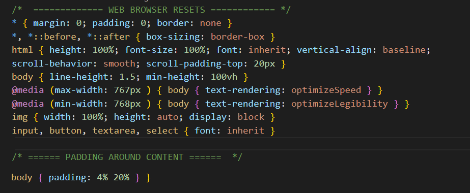
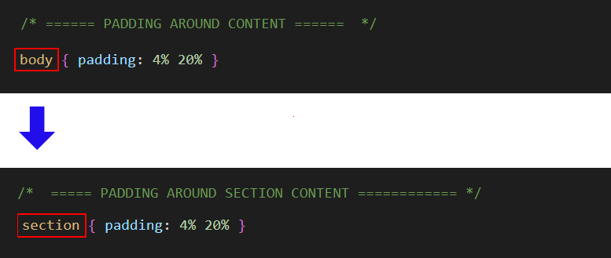

Learning Goals
At the end of this Tutorial, you will be able to:
- Understand the differences between a wireframe and a prototype, as those terms are used in front-end design.
- List and describe the main container (semantic) tags used in modern web design (HTML5 and CSS3).
About ‘negative space’ in web page layout
The term white space comes from the world of print design where content – text and images – are printed (mostly) on white-coloured paper. White space means space in a design layout that is empty. Although it contains nothing, white space is just as important as any of the content it surrounds for this reason: it makes text more inviting to read.
Because electronic screens – and modern printing processes – can create almost any background colour, the original term of white space is increasingly known by the alternative term of negative space.
Here are some examples of negative space in use in print design.

As in print, so too in web design.

Below are links to a number of helpful resources about negative space in web design.
Whitespace in Web Design: What It Is and Why You Should Use It
From Gisele Muller on Treehouse.
A Guide to Effective Use of White Space in Web Design
From Joanne Amos on Flywheel.
White Space Design: 20 Striking Examples and Best Practices
From Joseph Downes on Just in Mind.
What Is Whitespace? 9 Websites to Inspire Your Web Design
From Karla Cook on HubSpot Marketing Blog.
White-Space at Work: Why Less is More in Your Website Design
From Sherice Jacob on Crazyegg Blog.
White Space - A Perfect Option For Improving Usability In Web Designs
From Isabella Morris on Usability Geek.
Setting the page content width
Below are four typical examples of modern web pages that have all their content – both text and images – laid out in a single column.

As you can see, all have lots of negative space at the left and right edges of the content.
By default, web browsers add a small amount of white space at the left and right edges of the web browser window. You can see this in the sample web pages you have created and styled. One example is shown below.

Let’s add some wider, more user-friendly negative spacing to your sample web pages. To do this, you will use the CSS property called padding.
- In VS Code, open the following sample stylesheet file. websites/exercises/assets/css/style-1.css
- At the top of the stylesheet, just under the == WEB BROWSER RESETS == block, copy-and-paste the following:
/* ====== PADDING AROUND WEB PAGE BODY CONTENT ====== */ body { padding: 4% 20% }
The upper part of your stylesheet will now look as follows.  - Save your style-1.css stylesheet file.
- Repeat these steps for your style-2.css, style-3.css and global.css stylesheets.
Your four web pages with negative spacing should now look as shown below.


Adding negative spacing to the <section> containers
In the style-1.css, style-2.css, style-3.css and global.css stylesheets, you can see that the CSS padding property adds negative spacing around the entire <body> of the web page.
The visual effect on desktop/laptop and mobile screens will be as shown below.

This is fine for very basic web page layouts. However, in modern web design you will not want all the container elements to have the same negative spacing.
In other words, you may want the <nav>, <header>, <section> and <footer> elements to have different amounts of spacing around them.
For this reason, make the following changes to your style-3.css file.
The negative spacing will now be placed around each individual <section> container instead of around the <body> of the whole web page.
Uploading your files to GitHub
Your final task is to upload your web pages and stylesheets to your account on GitHub.
- Open a new tab in your web browser and go to GitHub.com. If you are not already signed in to your GitHub account, sign in now.

- On your GitHub home page, click the name of the repository (‘repo’) that holds your web pages. Its name will look as follows, where username is your chosen username on GitHub.
username.github.io

- On the next GitHub screen displayed, near the right of the screen, you can see a button named Add file. Click on it.

- From the dropdown list displayed, choose the option Upload files.

- In File Explorer (Windows) or Finder (Apple Mac), drag-and-drop your index.html file and your 📁 assets and 📁 exercises sub-folders to upload them to your repository on GitHub.

- Scroll down to the bottom of the GitHub screen, and accept or edit the short message (Add files via upload) in the Commit changes box.
- Finally, click the green Commit changes button to upload your entire exercises sub-folder and all the files it contains.

Your web pages are now published on GitHub at web addresses similar to the following, where username is the username you have chosen for your GitHub account:
https://username.github.io/index.html
– or simply –
https://username.github.io
https://username.github.io/exercises/page-1.html
https://username.github.io/exercises/page-2.html
https://username.github.io/exercises/page-3.html
It may take a few minutes for your uploaded files to appear on GitHub.